Fun Cruises GoaDesign case study · 7 min read
Choose a boat before you enquire.
Fun Cruises Goa is a landing-page concept for a yacht-hire business. I designed one long page that shows each boat's seats and starting rate before a visitor has to ask.
- Role
- Page structure, fleet browsing and visual design
- Team
- Solo
- Timeline
- 2022
- Why
- A brief I set myself: redesign the home page of a yacht-hire business in Goa
- Platform
- Desktop web page, designed 1920 px wide
- Scope
- One landing page. Finding a boat and starting an enquiry, with no booking flow
- Status
- Design concept. Not built, tested or launched
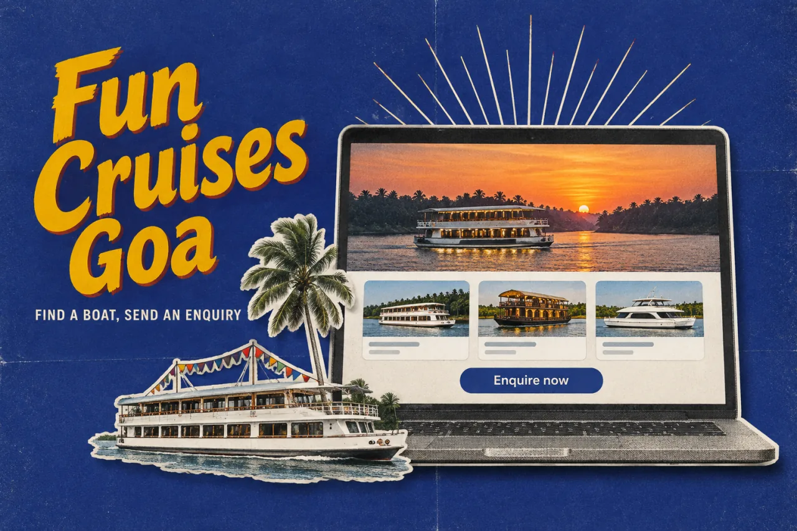
In short
- The problem: someone planning a boat trip for a group has two questions before they ask about a boat. Will everyone fit, and roughly what will it cost?
- What I did: I designed one long landing page with a hero, an About block, a fleet list with three filters, and a footer.
- The key idea: put the seats and a starting rate on every boat card, so a visitor can rule boats out without opening each one.
- Where it stands: a 2022 concept with no research behind it. It stops at the enquiry. There is no booking flow, and the prices in the mock-up are old sample content.
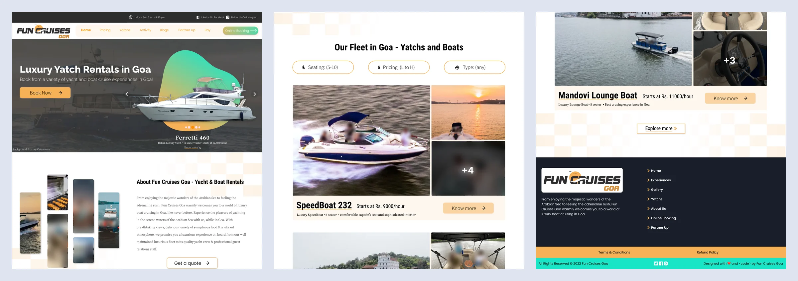
01 The brief
I set myself a brief: help a group pick a boat
This was a brief I set myself. I did no interviews and no testing, so this page is about the design and nothing else.
I pictured someone organising a day out on the water for a group. Before they send an enquiry they have a few plain questions. I made answering those questions the job of the page. They are my assumption, not a research finding.
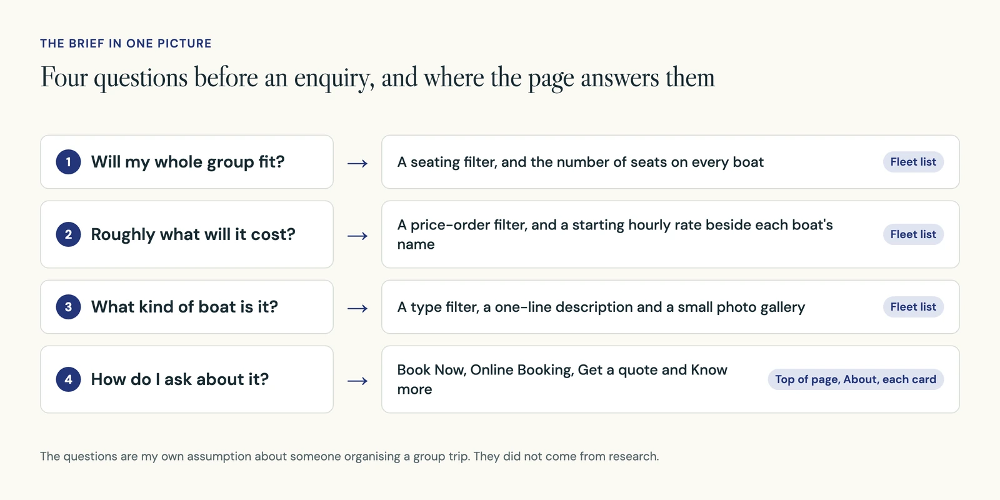
02 Page structure
One long page in seven bands
The whole concept is a single page, 1920 px wide and 5940 px tall. It has seven bands. The fleet is the largest at about 45% of the page, because that is where a visitor compares boats.
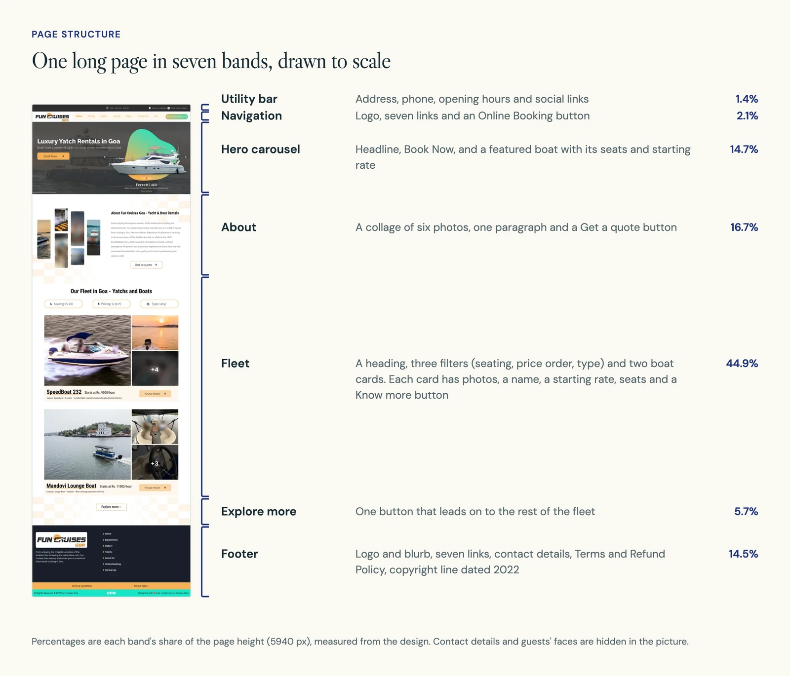
03 The top of the page
The first screen shows a boat and a way to book it
The hero, the large opening area of a page, does two things. It says what the business offers in one line, and it puts a boat in front of the visitor straight away. That featured boat already carries its seats and starting rate, so the pattern used later in the fleet list starts here.
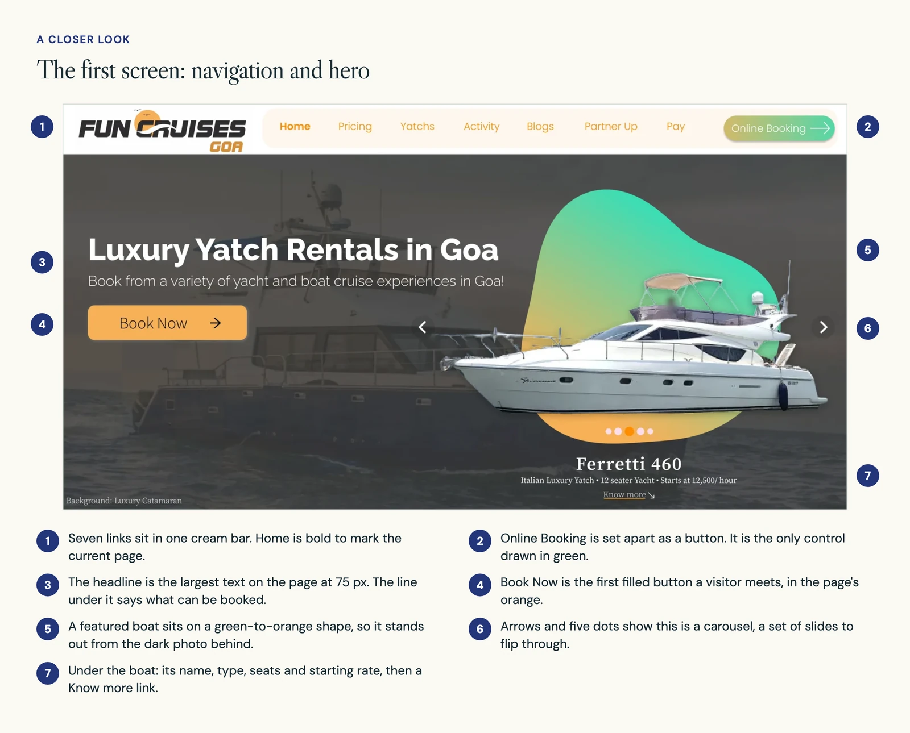
The navigation holds seven links in one cream bar. Online Booking sits apart as a green button, so the quickest way in is always in the same corner. The cost is that Book Now and Online Booking sit close together and seem to do the same thing.
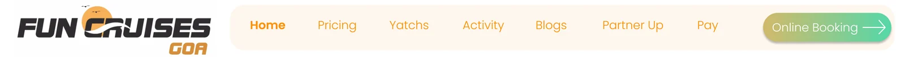
Below the hero, the About block is for visitors who are not ready to choose. Its button says Get a quote, not Book Now. Some people know what they want. Others need a question answered first, and this is their way in.
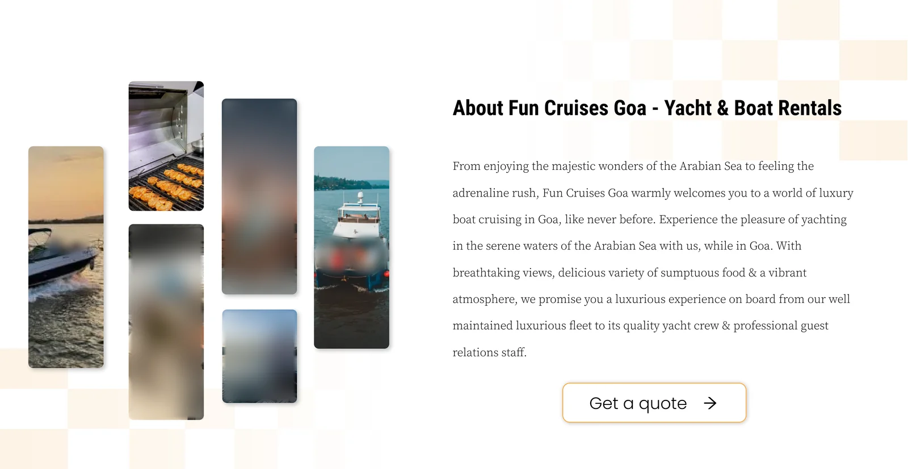
04 The fleet list
Every boat card shows seats and a starting rate
This is the centre of the page. Three filters sit above the list: seating, price order and boat type. They match the first three questions in my brief.
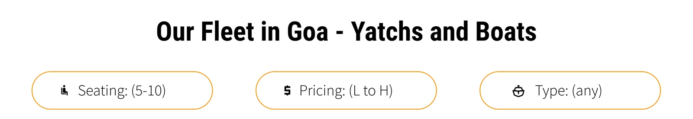
Each boat gets a wide card. Photos take most of it. One strip underneath holds what a visitor needs to compare: the name, a starting hourly rate, the type and the number of seats. They can rule a boat out without opening it.
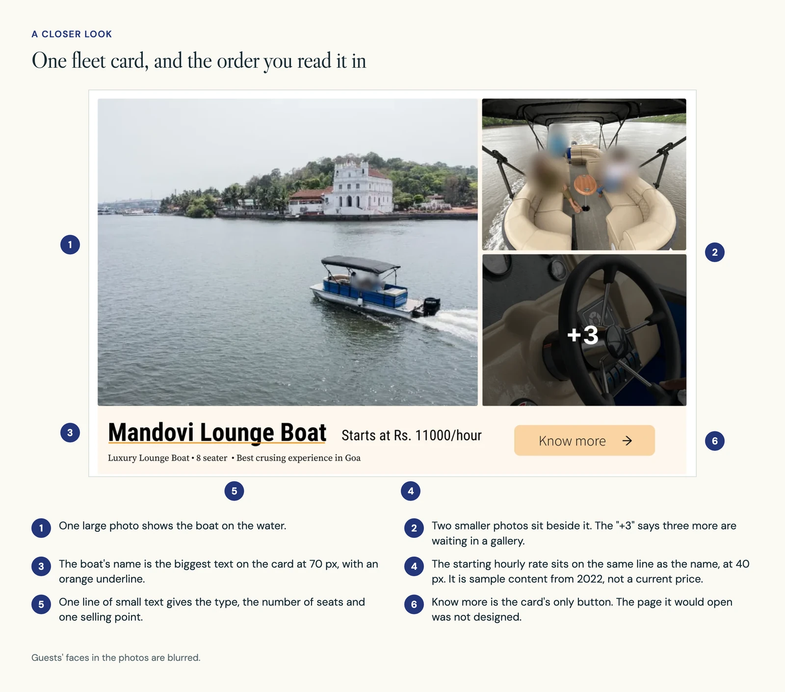
Two trade-offs come with this. Filters only work if every boat has the same details recorded, and I did not design what happens when no boat matches. A starting rate is also not the full cost. Minimum hours, what is included and any extra fees would still need explaining.
05 Type and colour
Large names, and orange for anything you can press
I measured the type on the page. The headline is 75 px and running text is 25 px. Boat names are 70 px, almost as large as the headline, so the fleet reads as a list of names first.
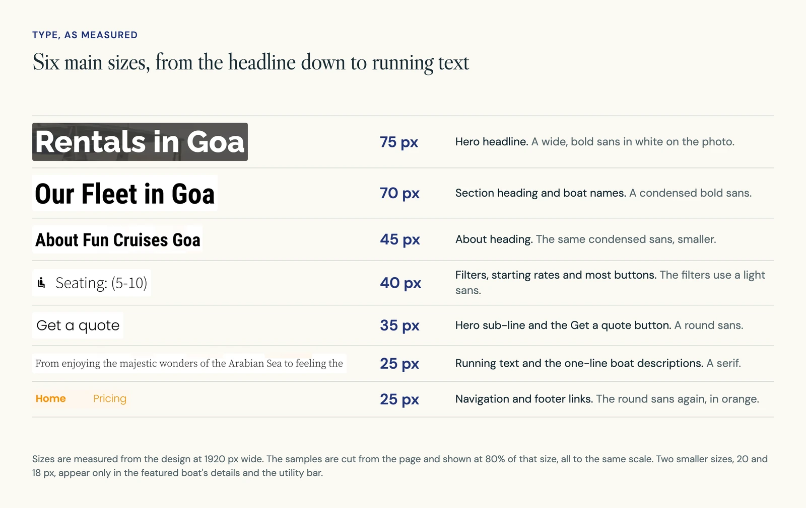
Looking at it now, the page uses five type styles: a wide sans for the headline, a condensed sans for headings, a light sans for filters, a round sans for links and buttons, and a serif for running text. That is a lot for one page, and it is the first thing I would tidy.
Colour has a simpler job. Orange marks what can be pressed: links, filter outlines, buttons and the line under each boat name. Cream sits behind as a quiet background. Green is kept for the hero shape, the Online Booking button and the bottom bar.
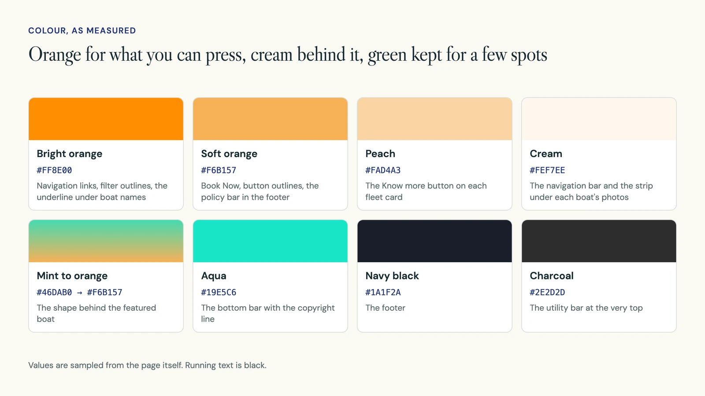
06 The enquiry path
Three routes lead towards an enquiry, and the page stops there
A visitor can move towards an enquiry in three ways, depending on how sure they are. Each route ends in a button. What opens after the button was not designed, so the diagram shows those screens as dashed boxes.
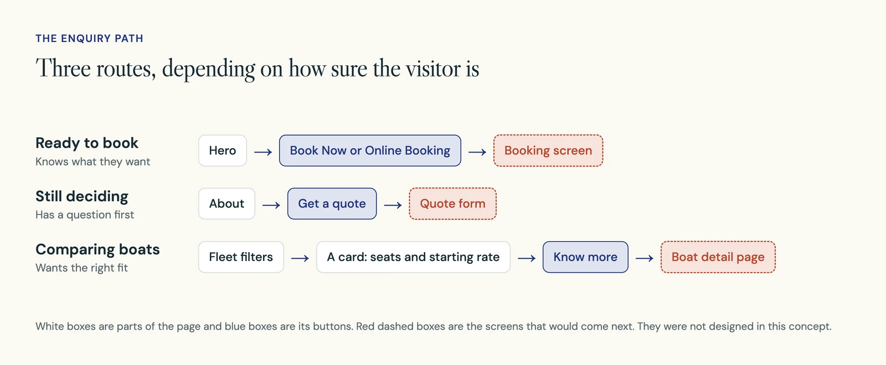
The footer repeats the main links and adds two pages a visitor would look for before paying: Terms & Conditions and Refund Policy.
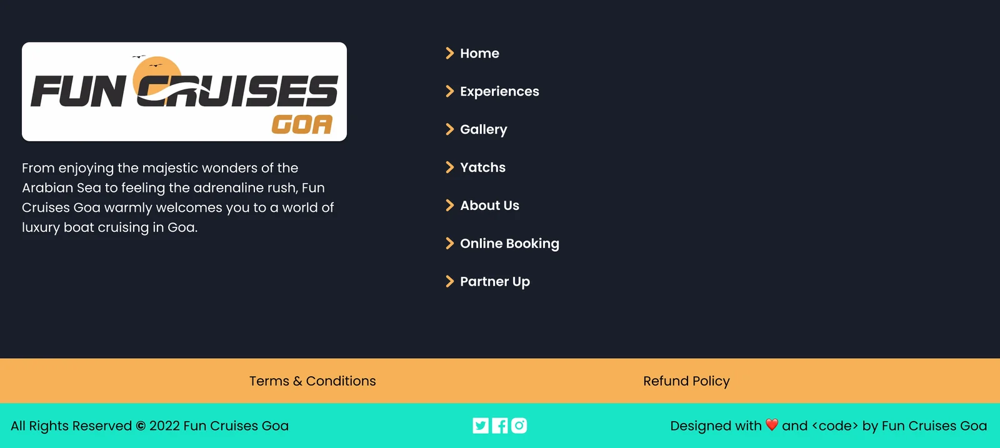
07 What comes next
An enquiry should not look like a confirmed booking
That is what I would fix first. The page uses Book Now, Online Booking, Get a quote and Know more, and it does not say which of them reserves a boat and which only asks a question.
- Design the boat page that Know more points to, with availability, what is included, accessibility details and cancellation terms.
- Design the open filter menus and the screen shown when no boat matches.
- Test it. Ask someone planning for a group to choose a boat, say what they expect to pay, and say what they would still need to confirm.
- Correct the copy. The mock-up spells yacht as "Yatch" in several places, and I have left the artwork as it was.
None of this was built or tested, so there are no results to report.
Meet the chapter. Know how to take part.